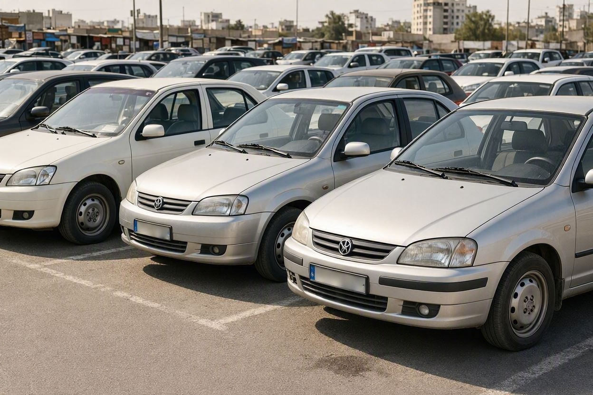
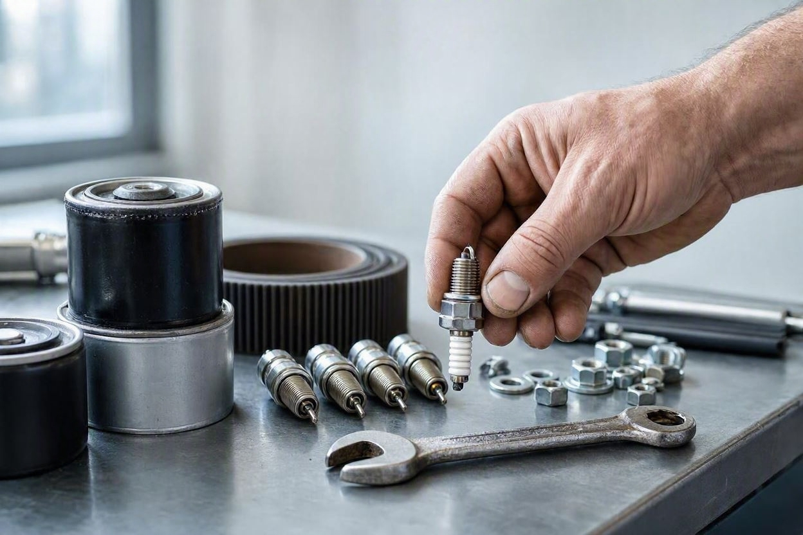
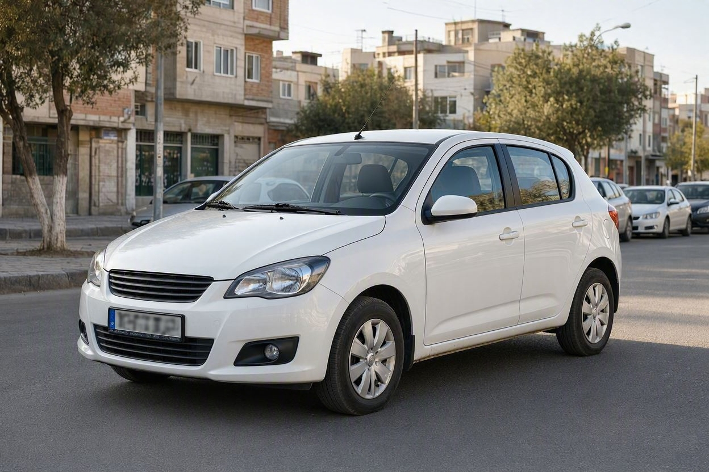
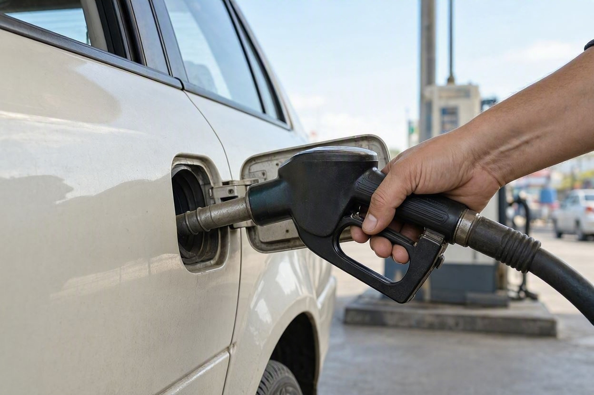
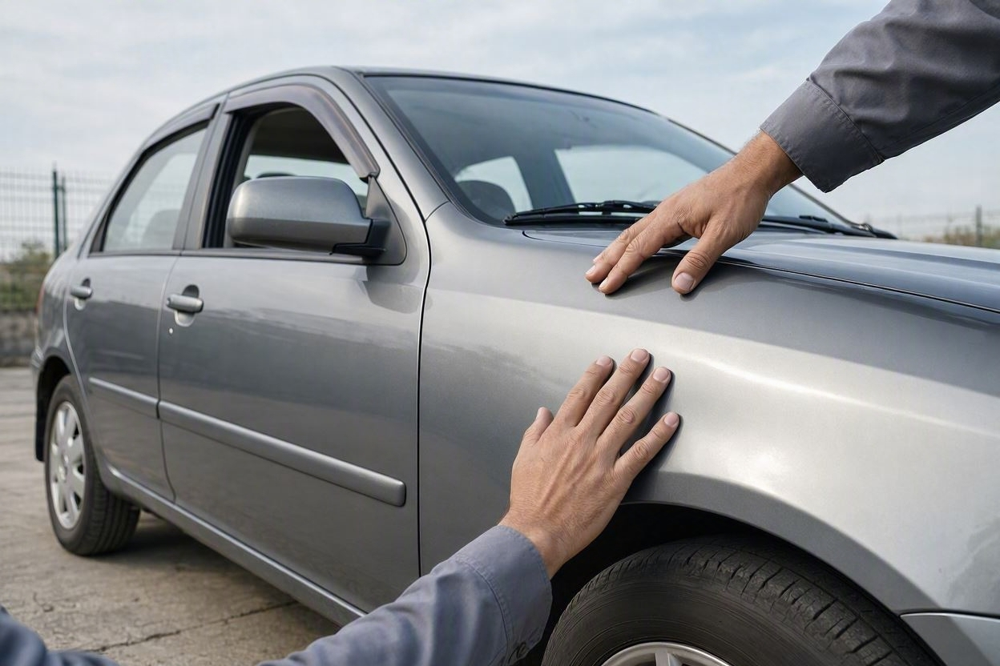

ماشین کمخرج چی بخریم؟ کماستهلاکترین خودروهای ایرانی دستدوم
خیلی از خریدارها فقط به قیمت خرید نگاه میکنند و بعد از چند ماه تازه میفهمند خرج واقعی خودرو کجاست. راستش را بخواهید، یک ماشین ارزان که قطعاتش گران و کمیاب باشد، در بلندمدت از یک خودرو کمی گرانتر اما کمخرج، پرهزینهتر درمیآید. در این راهنما با کمک کارماچک سراغ پرطرفدارترین خودروهای ایرانی دست دوم میرویم که هم کممصرفاند، هم قطعهشان در دسترس است و هم افت قیمت کمتری دارند.
کمخرجترین و کماستهلاکترین خودروهای ایرانی دست دوم معمولاً پراید، تیبا، ساینا و کوییک از سایپا و پژو ۴۰۵، پارس و سمند از ایرانخودرو هستند. دلیلش هم روشن است: قطعات فراوان و ارزان، تعمیر آسان، مصرف سوخت پایین و تقاضای همیشگی بازار که افت قیمت را کم میکند. تندر ۹۰ و رانا هم بهخاطر دوام فنی بالا گزینههای خوبی برای هزینه نگهداری کم هستند.
خلاصه در یک دقیقه
- هزینه واقعی خودرو فقط قیمت خرید نیست؛ مصرف سوخت، قیمت قطعات و افت قیمت را با هم ببینید.
- محصولات سایپا مثل پراید، تیبا، ساینا و کوییک ارزانترین و در دسترسترین قطعات را دارند.
- پژو ۴۰۵، پارس و سمند از ایرانخودرو بهخاطر فراوانی قطعه و تعمیرکار، کمدردسر هستند.
- تندر ۹۰ و رانا دوام فنی بالایی دارند و در صورت نگهداری درست، خرج زیادی نمیتراشند.
- حتی ارزانترین خودرو هم اگر تصادفی یا فرسوده باشد پرخرج میشود؛ کارشناسی پیش از خرید مهم است.
کمخرج و کماستهلاک دقیقاً یعنی چه؟
این دو عبارت شبیه هم بهنظر میرسند اما یکی نیستند. کمخرج بودن یعنی هزینه نگهداری روزمره خودرو کم است: مصرف سوخت پایین، قطعات ارزان و سرویسهای ساده. کماستهلاک بودن یعنی خودرو بهمرور ارزش خود را کمتر از دست میدهد و هنگام فروش، افت قیمت کمتری دارد.
در بازار ایران این دو ویژگی اغلب کنار هم میآیند. خودرویی مثل پراید هم خرج نگهداری کمی دارد و هم بهخاطر تقاضای دائمی، افت قیمتش نسبت به بسیاری از خودروهای دیگر ملایمتر است. برای همین وقتی میپرسید ماشین کمخرج چی بخریم، باید هر دو طرف ماجرا را ببینید: هزینهای که ماهانه میپردازید و پولی که هنگام فروش از دست میدهید.

چه چیزهایی خودرو را کمخرج میکنند؟
قبل از رسیدن به فهرست خودروها، خوب است بدانید هزینه یک ماشین از کجا میآید. این عوامل بیشترین اثر را دارند:
- در دسترس بودن و قیمت قطعات: قطعه فراوان و ارزان یعنی تعمیر سریع و کمهزینه.
- مصرف سوخت: تفاوت یک تا دو لیتر در هر صد کیلومتر، در طول سال رقم قابل توجهی میشود.
- سادگی فنی: هرچه ساختار موتور و گیربکس سادهتر باشد، تعمیر ارزانتر و تعمیرکار در دسترستر است.
- دوام قطعات: خودرویی که کمتر خراب میشود، در بلندمدت کمخرجتر است حتی اگر قطعهاش کمی گران باشد.
- تقاضای بازار: تقاضای بالا هنگام فروش، افت قیمت را کم و خودرو را کماستهلاک میکند.
حالا با این معیارها سراغ خودروهای پرطرفدار میرویم که بیشترین امتیاز را در بازار ایران میگیرند.

معرفی کمخرجترین خودروهای ایرانی دست دوم
در ادامه پرطرفدارترین گزینهها را بررسی میکنیم. برای هر خودرو گفتهایم نقطه قوتش در کمخرج بودن چیست و به چه کسی بیشتر میخورد.
پراید
پراید با اینکه دیگر تولید نمیشود، هنوز پرتعدادترین خودرو بازار دست دوم ایران است. قطعاتش را میتوان در هر شهر و روستایی و اغلب با قیمت پایین پیدا کرد و تقریباً هر تعمیرکاری با آن آشناست. مصرف سوخت آن هم در بین کمترینهای بازار قرار دارد. اگر دنبال ارزانترین گزینه برای نگهداری و جابهجایی روزمره هستید، پراید همچنان یک انتخاب منطقی است.
تیبا و تیبا ۲
تیبا و نسخه هاچبک آن تیبا ۲، جانشین راحتتر و امنتر پراید محسوب میشوند. قطعات بدنه و مکانیکی تیبا ارزان و فراوان است و هزینه نگهداری آن پایین میماند. همین ویژگیها باعث شده تیبا همیشه یکی از پرتقاضاترین خودروهای اقتصادی بازار باشد و افت قیمت ملایمی داشته باشد.
ساینا
ساینا از نظر فنی تفاوت چندانی با تیبا ندارد و همان پلتفرم را با ظاهری متفاوت به کار میبرد. به همین دلیل در بحث قطعات یدکی، سرویسهای دورهای و مصرف سوخت، دردسر کمی برای مالک ایجاد میکند. برای کسی که یک سدان کوچک و کمخرج میخواهد، ساینا گزینه مناسبی است.
کوییک
کوییک نیز روی همان پایه فنی محصولات سایپا ساخته شده و بهعنوان یک هاچبک بهروزتر شناخته میشود. مصرف سوخت آن نزدیک به تیبا و سایناست و قطعاتش در دسترس. کوییک برای خریدارانی که ظاهر جوانتر میخواهند اما نمیخواهند از مزیت قطعه ارزان سایپا بگذرند، انتخاب خوبی است.
پژو ۴۰۵ و پارس
اگر به یک سدان بزرگتر و جادارتر فکر میکنید، پژو ۴۰۵ و پارس از محصولات ایرانخودرو، انتخابهای شناختهشدهای هستند. این دو خودرو سالهاست در جادههای ایران کار میکنند، قطعه و تعمیرکارشان فراوان است و ساختار فنیشان برای اغلب مکانیکها آشناست. مصرف سوختشان از خودروهای کوچک سایپا بیشتر است، اما دوام و در دسترس بودن قطعه، نگهداری آنها را مقرونبهصرفه نگه میدارد.
سمند
سمند بهعنوان یک خودرو ملی، بدنهای مقاوم و قطعاتی فراوان دارد. جادار بودن و سادگی نسبی فنی، آن را به گزینهای کمدردسر برای خانوادهها تبدیل کرده است. سمند برای کسانی که فضای بیشتر میخواهند اما نمیخواهند وارد هزینههای نگهداری بالا شوند، منطقی است.
تندر ۹۰ و رانا
تندر ۹۰ که با نام ال۹۰ هم شناخته میشود، بهخاطر موتور بادوام و استهلاک پایین، شهرت خوبی دارد. قطعات آن نسبت به محصولات سایپا کمی گرانتر است، اما چون کمتر خراب میشود، در بلندمدت هزینه کمتری روی دست مالک میگذارد. رانا هم که بر پایه مشترکی با برخی محصولات ایرانخودرو ساخته شده، خودرویی نسبتاً بادوام و کمخرج به شمار میرود.
قبل از خرید، از سلامت واقعی خودرو مطمئن شوید
حتی کمخرجترین مدل هم اگر ایراد پنهان داشته باشد پرهزینه میشود. بررسی تخصصی کمک میکند وضعیت واقعی فنی و بدنه خودرو را پیش از معامله بدانید.
رزرو کارشناسی خودرو
جدول مقایسه مصرف سوخت و هزینه نگهداری
ارقام مصرف سوخت زیر تقریبی و بر اساس گزارش منابع بازار خودرو ایران است و بسته به شرایط رانندگی و سلامت خودرو تغییر میکند. هدف، مقایسه نسبی است نه عدد قطعی.
| خودرو | مصرف سوخت تقریبی (لیتر در ۱۰۰ کیلومتر) | وضعیت قطعات | جمعبندی هزینه نگهداری |
|---|---|---|---|
| پراید | حدود ۶.۷ | بسیار فراوان و ارزان | کمترین هزینه نگهداری |
| تیبا | حدود ۶.۹ | فراوان و ارزان | بسیار کمخرج |
| ساینا | حدود ۷ | فراوان و ارزان | کمخرج |
| کوییک | حدود ۷ | فراوان و ارزان | کمخرج |
| پژو ۴۰۵ و پارس | بیشتر از خودروهای کوچک سایپا | بسیار فراوان | متوسط اما کمدردسر |
| تندر ۹۰ | اقتصادی نسبت به کلاس | در دسترس، کمی گرانتر | کمخرج در بلندمدت بهخاطر دوام |
همانطور که میبینید، محصولات کوچک سایپا در کمترین مصرف و ارزانترین قطعه قرار دارند و خودروهای ایرانخودرو با فضای بیشتر، هزینه نگهداری متوسط اما قابل مدیریت دارند. اگر میخواهید در کنار انتخاب مدل، از ارزش واقعی و افت قیمت هم مطمئن شوید، میتوانید از ابزار قیمتگذاری خودرو کمک بگیرید.
اشتباهات رایج در خرید ماشین کمخرج
خیلیها فقط بهخاطر شهرت یک مدل خرید میکنند و از وضعیت همان خودرو غافل میشوند. این اشتباهها بیشتر از همه دیده میشوند:
- نگاه فقط به قیمت خرید و بیتوجهی به مصرف سوخت و قیمت قطعات.
- نادیده گرفتن کارکرد واقعی و وضعیت فنی، صرفاً بهاعتماد نام مدل.
- بیتوجهی به رنگشدگی و تصادف، که میتواند یک خودرو کمخرج را به گزینهای پرهزینه تبدیل کند.
- مقایسه نکردن چند خودرو همرده پیش از تصمیم نهایی.
- فراموش کردن این نکته که افت قیمت هم بخشی از هزینه خودرو است.
در عمل، انتخاب مدل درست تازه نیمی از کار است. نیم دیگر، مطمئن شدن از سلامت همان خودرویی است که میخواهید بخرید.

چرا کارشناسی حتی برای خودرو ارزان لازم است
ممکن است فکر کنید برای یک خودرو ارزان، کارشناسی هزینه اضافه است. اما دقیقاً همینجاست که خیلیها ضرر میکنند. تفاوت قیمت یک پراید یا تیبای سالم با نمونه تصادفی و پرایراد، میتواند بیشتر از هزینه کارشناسی باشد. در این حالتها بررسی تخصصی ارزش خود را نشان میدهد:
- وقتی میخواهید مطمئن شوید خودرو رنگشدگی یا تصادف پنهان ندارد.
- وقتی کارکرد اعلامشده با ظاهر و فرسودگی خودرو هماهنگ نیست.
- وقتی بین چند خودرو همقیمت مردد هستید و میخواهید سالمترین را انتخاب کنید.
- وقتی میخواهید بدانید ایرادهای موجود چه اثری بر هزینه تعمیر و ارزش معامله دارند.
کارماچک خدمات کارشناسی خودرو را برای بررسی فنی، رنگ، بدنه و عوامل مؤثر بر ارزش معامله ارائه میدهد. رویکرد ما ساده است: فقط ایراد خودرو را شناسایی نمیکنیم؛ اثر آن روی هزینه تعمیر و ارزش واقعی معامله را هم مشخص میکنیم. البته توجه داشته باشید هیچ بررسیای تشخیص صددرصد و بدون خطا نیست؛ هدف، کم کردن ریسک معامله است.
جمعبندی
اگر دنبال یک ماشین کمخرج ایرانی هستید، محصولات کوچک سایپا مثل پراید، تیبا، ساینا و کوییک کمترین هزینه نگهداری و مصرف را دارند و محصولات ایرانخودرو مثل پژو ۴۰۵، پارس و سمند، فضای بیشتر را با قطعه فراوان همراه میکنند. تندر ۹۰ و رانا هم بهخاطر دوام، در بلندمدت کمخرج هستند. اما فراموش نکنید که شهرت مدل کافی نیست؛ سلامت همان خودروی خاص است که تعیین میکند معامله شما واقعاً کمخرج از آب درمیآید یا نه.
مطمئنتر خودرو کمخرج بخرید
پیش از نهایی کردن معامله، بگذارید وضعیت فنی و بدنه خودرو با یک بررسی تخصصی روشن شود تا انتخاب کمخرج شما واقعاً کمخرج بماند.
ثبت درخواست کارشناسیسؤالات متداول
کمخرجترین ماشین ایرانی برای نگهداری کدام است؟
در مجموع محصولات کوچک سایپا مثل پراید و تیبا کمترین هزینه نگهداری را دارند، چون قطعاتشان بسیار ارزان و فراوان است و مصرف سوخت پایینی دارند. پراید با اینکه دیگر تولید نمیشود، همچنان ارزانترین گزینه برای تعمیر و نگهداری در بازار دست دوم است.
تفاوت خودرو کمخرج و کماستهلاک چیست؟
کمخرج یعنی هزینه نگهداری روزمره کم است، مثل مصرف سوخت و قیمت قطعات. کماستهلاک یعنی خودرو هنگام فروش افت قیمت کمتری دارد. بسیاری از خودروهای پرتقاضای ایرانی مثل پراید و تیبا هر دو ویژگی را با هم دارند، چون هم ارزان نگه داشته میشوند و هم تقاضای فروش بالایی دارند.
برای خانواده کدام خودرو ایرانی کمخرج مناسبتر است؟
برای خانواده که به فضای بیشتر نیاز دارد، سمند، پژو ۴۰۵ و پارس گزینههای منطقی هستند. این خودروها جادار و بادواماند و قطعه و تعمیرکارشان فراوان است. مصرف سوختشان از خودروهای کوچک سایپا بیشتر است اما نگهداری آنها همچنان مقرونبهصرفه باقی میماند.
آیا تندر ۹۰ خودرو کمخرجی است؟
تندر ۹۰ بهخاطر موتور بادوام و استهلاک پایین شناخته میشود. قطعات آن کمی از محصولات سایپا گرانتر است، اما چون کمتر دچار خرابی میشود، در بلندمدت هزینه کمتری روی دست مالک میگذارد. برای کسی که دوام و آرامش خیال میخواهد، انتخاب خوبی است.
موقع خرید ماشین کمخرج به چه چیزی بیشتر دقت کنم؟
علاوه بر مدل، به وضعیت همان خودرو دقت کنید: کارکرد واقعی، سلامت بدنه و رنگ، وضعیت موتور و گیربکس و هماهنگی فرسودگی با کارکرد اعلامشده. یک خودرو تصادفی یا دستکاریشده حتی اگر مدلش کمخرج باشد، میتواند پرهزینه شود.
آیا خرید خودرو تولید متوقفشده مثل پراید هنوز منطقی است؟
بله، از نظر نگهداری همچنان منطقی است، چون قطعات پراید فراوان و ارزان است و تعمیرکار آن در همهجا در دسترس. تنها نکته این است که در انتخاب نمونه سالم دقت کنید، چون تعداد زیاد این خودرو در بازار بهمعنای یکسان بودن سلامت همه آنها نیست.